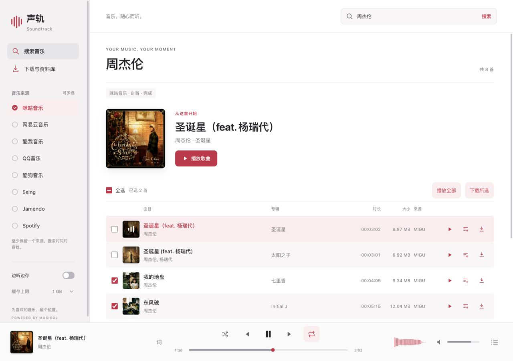
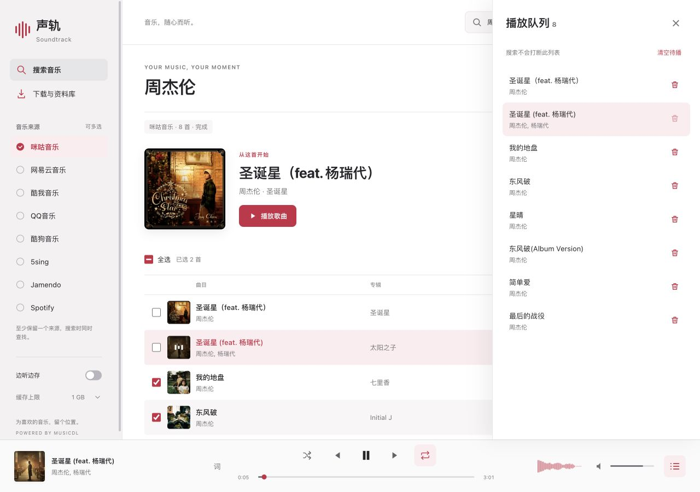

musicdl-soundtrack
声轨 Soundtrack
搜索音乐，安排接下来要听的歌，再把选中的歌曲下载到本地。 由 musicdl 驱动，可在本机浏览器运行，也可打包为 macOS / Windows 桌面应用。
Interface / 01
逐条看结果，选好再下载。

- 来源各自显示状态
默认开启咪咕，可选网易云、酷我、QQ、酷狗、5sing、Jamendo 和 Spotify。结果逐条出现，超时或失败单独提示。
- 一次选择，多首下载
勾选歌曲或全选当前结果，按所设的 1–5 首并发数下载。已下载歌曲可在本地资料库中播放和管理。
Playback / 02
继续找歌，不打断当前队列。

- 按自己的顺序听
播放全部、插入下一首或移除待播歌曲，也可以切换随机、列表循环与单曲循环。重新搜索不会清空当前队列。
- 歌词与缓存随手可用
打开同步歌词，点击歌词行跳转；开启边听边存，并设置 512 MB–5 GB 的缓存上限。手机布局保留队列、进度和多选操作。
使用前了解
这里是项目展示页，不提供在线搜索或下载服务。实际使用需在本机启动应用，并能访问所选音乐来源；来源可用性和音质取决于网络、接口与访问权限。
播放队列和模式刷新后重置。收藏、歌单链接导入、下载断点续传尚未提供；当前只处理可用的直接音频链接，不支持专用媒体解密、HLS 合并或转码。Apple Music 风格仅指界面设计，不代表接入其服务。
请仅下载你有权使用的内容，并遵守来源平台条款。截图展示当前源码功能，发行包请以对应 Release 说明为准。
Open source
在 GitHub 查看项目
查看源代码、中英文使用说明，以及本地运行和打包方法。
Desktop releases
下载 Windows / macOS 版本
前往 Release 页面查看可用安装包，按系统与架构选择附件；也可按 README 从源码构建。